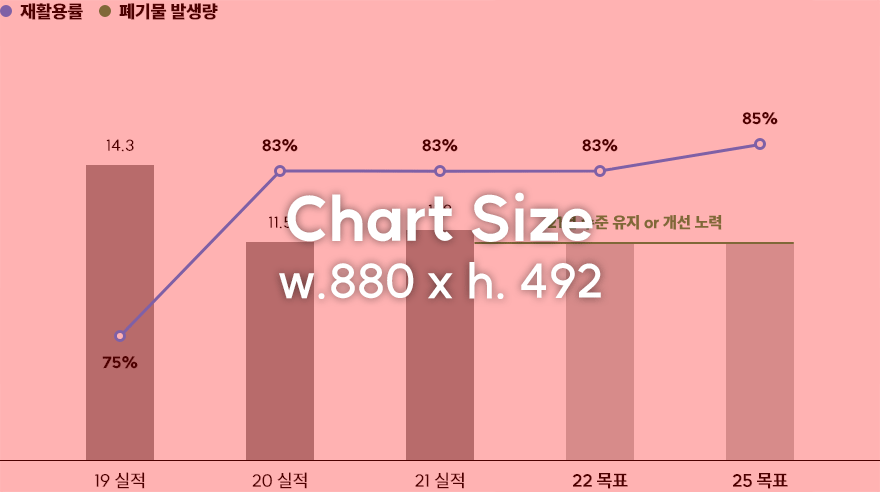

6. Recycling Wastes from
Business Sites
Waste Recycling Rate Target : ▲85%
SK innovation is committed to improving waste recycling rate and securing our leadership in resource circulation, in line with the globally growing demand for waste management.
Waste recycling rate and waste generation

Strategy
Leading company in resource circulation through quantitative and qualitative improvements
More than 85% of waste recycling rate
+
Promoting the early achievement of the Phase 2 goal of the Framework Act on Resource Circulation by 2025
Achieving ZWTL certification
Securing Zero Waste to Landfill by the advancement of the recycling system for Ulsan, Seosan, and JeungPyeong plants